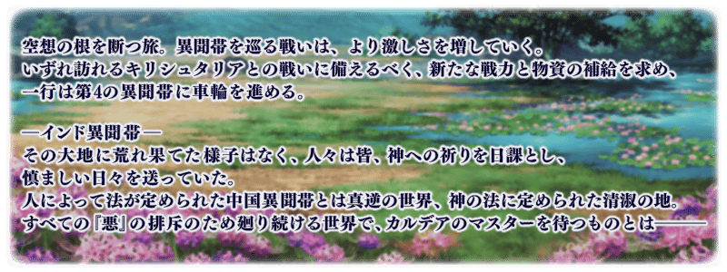
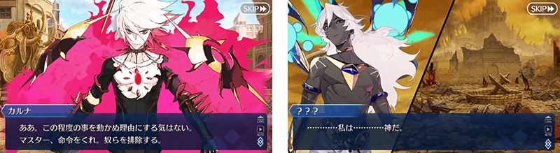
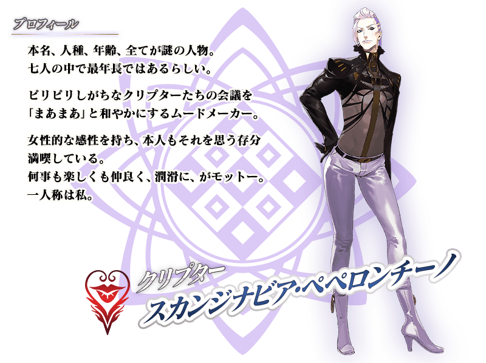
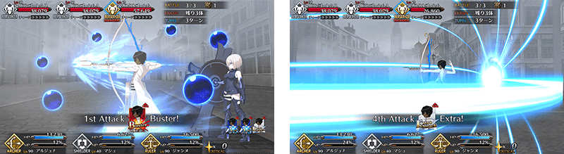
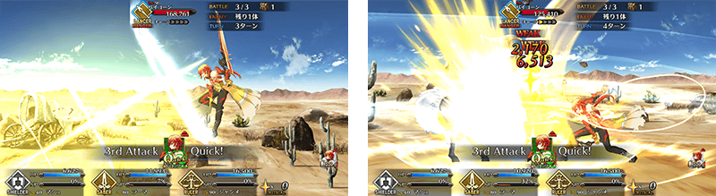

◆第2部 第4章「Lostbelt No.4 創世滅亡輪廻 宇迦淨土 黑色最終之神」開幕◆
第4個異聞帯「創世滅亡輪廻 宇迦淨土 黑色最終之神」的舞台是印度。
自被優美蓮花彩繪的神秘壟罩的世界，請盡情享受新開始的故事！
※本頁面皆為開發中圖片。會有與實際圖片相異的情況。
◆公開時間◆
2019年6月15日(六) 20:00～
◆開放條件◆
通過第2部 第3章「Lostbelt No.3 人智統合真國 SIN 紅之月下美人後開放。
※不需要通過亞種特異點(從Ⅰ到Ⅳ)。

在「Fate/Grand Order」官方網站內首頁及Gallery，公開了第2部 第4章「Lostbelt No.4 創世滅亡輪廻 宇迦淨土 黑色最終之神」的電視廣告。敬請確認。
動畫製作：A-1 Pictures

自第2部 第4章「Lostbelt No.4 創世滅亡輪廻 宇迦淨土 黑色最終之神」追加2種新道具！
為新登場從者的技能強化及靈基再臨必要的道具。
主要能從於第2部 第4章「Lostbelt No.4 創世滅亡輪廻 宇迦淨土 黑色最終之神」主線關卡出現的敵人做為戰利品獲得。

「★5(SSR)阿周那」「★5(SSR)迦爾納」「★4(SR)羅摩」的戰鬥動作及寶具演出翻新！
在「Fate/Grand Order」官方網站內的公告中，以影片公開寶具演出，敬請確認。
◆翻新時間◆
2019年6月15日(六) 21:00～
【阿周那】

【迦爾納】

【羅摩】

在2019年6月15日(六)的維修後反映的更新內容之中，介紹代表性的內容。
◆追加時間◆
2019年6月15日(六) 20:00～
裝備概念禮裝的NPC從者登場！
在2019年6月15日(六) 20:00以後新配信的一部份關卡中，NPC從者變得會裝備概念禮裝。
※NPC從者裝備的概念禮裝由關卡決定，無法任意變更。 ※NPC從者裝備的概念禮裝，只限在「支援選擇」「隊伍確認」「配置變更」畫面中，長按概念禮裝的話可確認詳情。 ※無法確認NPC從者的詳情。
能變更固定出撃的NPC從者配置！
第2部 第4章的一部份的關卡中，點擊「隊伍確認畫面」的「配置變更」的話，可變更固定出撃的NPC從者配置。
※目前為止配信的關卡中固定出撃的NPC從者無法變更配置。 ※出撃固定的對象為於「隊伍確認」畫面顯示「出撃固定」的NPC從者。
其他還有，期間限定「宇迦淨土Pick Up召喚」和「Lostbelt No.4 創世滅亡輪廻 宇迦淨土 黑色最終之神」開幕前夕宣傳活動同時舉辦！
關於詳情，請自下述橫幅確認。
■「宇迦淨土Pick Up召喚」詳細情報

■「Lostbelt No.4 創世滅亡輪廻 宇迦淨土 黑色最終之神」開幕前夕宣傳活動詳細情報